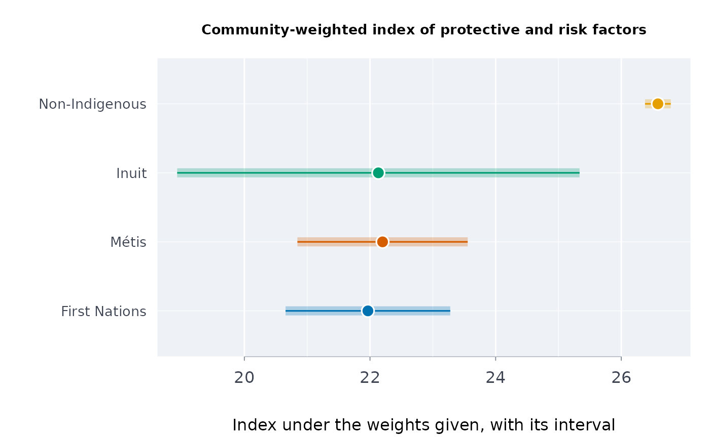

A community-weighted index of protective and risk factors
Source:R/indigenous_frameworks.R
commidx.RdCombines published indicators into one index for each group or place, with weights the community sets: protective factors count for, risk factors against. The weights are never estimated.
Arguments
- data
A data frame, one row per group (or place) and indicator.
- grp, ind, est, lower, upper
Column names; every indicator must be on one scale (percent, for example: a rate per 1,000 beside a percentage makes the weights meaningless).
- w
Named weights, one per indicator used: positive for a protective factor, negative for a risk factor.
- qual
Optional column of quality flags:
"E"rows are marked use with caution, and suppressed ones ("F","x","..") get no estimate.- conflvl
Confidence level of each group's index limits (default 0.95).
Value
A data frame of class rmbl_community_index: group,
index, lower, upper, usewithcau; attributes
weights and conflvl. plot() draws it.
Details
Inuit Tapiriit Kanatami's National Inuit Suicide Prevention Strategy (2016) names risk factors (among them crowded housing, food insecurity, childhood adversity, mental distress) and protective factors (among them cultural continuity, social equity, family strength, healthy child development). How much each matters is a judgement for the people the index describes, so the function takes the weights as given: positive for protective, negative for risk. The index is \(\sum_i w_i p_i / \sum_i |w_i|\), with standard error \(\sqrt{\sum_i w_i^2 s_i^2} / \sum_i |w_i|\) from the published intervals (independent estimates). It is a summary of the indicators under the weights given; with other weights it ranks places otherwise, and it is never a ranking of Nations or communities on their culture. For Inuit regions, use Inuit data only.
References
Inuit Tapiriit Kanatami (2016). National Inuit Suicide Prevention Strategy. Ottawa. itk.ca/national-inuit-suicide-prevention-strategy
Carroll SR, et al. (2020), see holbal.
Examples
# weights a community might set for adults, 2019/2022 (table 13-10-0924-01);
# others would differ
h <- indiex("health")
h <- h[h$period == "2019/2022" & h$age == "Total, 18 years and over", ]
w <- c(2, 1, -2, -1)
names(w) <- c(
"Sense of belonging to local community, somewhat strong or very strong",
"Has a regular healthcare provider",
"Perceived life stress, most days quite a bit or extremely stressful",
"Heavy drinking"
)
ci <- commidx(
h,
"group",
"indicator",
"estimate",
"lower",
"upper",
qual = "quality",
w = w
)
ci
#> ╭── Community-weighted index of protective and risk factors ──────────────────╮
#> │ Groups 4 │
#> │ Indicators 4 │
#> │ Index sum of w x estimate over sum of |w|, on the indicators' scale │
#> │ │
#> │ group index 95% CI │
#> │ -------------- ----- -------------- │
#> │ First Nations 21.97 [20.66, 23.28] │
#> │ Métis 22.20 [20.84, 23.56] │
#> │ Inuit 22.13 [18.93, 25.34] │
#> │ Non-Indigenous 26.58 [26.38, 26.79] │
#> │ │
#> │ Highest index: Non-Indigenous (26.58); lowest: First Nations (21.97). │
#> │ Their intervals do not overlap: the gap is more than sampling error. │
#> │ │
#> │ A higher index: more of the protective factors, less of the risks, │
#> │ under the weights given. │
#> │ Weights (positive protective, negative risk): │
#> │ +2 Sense of belonging to local community, somewhat strong or very strong │
#> │ +1 Has a regular healthcare provider │
#> │ -2 Perceived life stress, most days quite a bit or extremely stressful │
#> │ -1 Heavy drinking │
#> │ The weights are a judgement for the people the index describes; │
#> │ with other weights it ranks places otherwise. It is never a ranking │
#> │ of Nations or communities on their culture. │
#> │ Risk and protective factors: Inuit Tapiriit Kanatami (2016). │
#> ╰─────────────────────────────────────────────────────────────────────────────╯
# an indicator the table does not publish for the period leaves the index NA,
# never filled: food insecurity is ".." for 2019/2022
w2 <- c(w, "Household food insecure" = -2)
commidx(
h,
"group",
"indicator",
"estimate",
"lower",
"upper",
qual = "quality",
w = w2
)$index
#> [1] NA NA NA NA
plot(ci)

# your own table and the weights a community chose: made-up percentages
own <- data.frame(
community = rep(c("Lakeside", "Riverbend"), each = 3),
item = rep(c("Speaks the language", "Has a doctor", "Food insecure"), 2),
pct = c(38, 72, 21, 25, 64, 30),
lo = c(33, 67, 17, 20, 58, 25),
hi = c(43, 77, 25, 30, 70, 35)
)
commidx(own, "community", "item", "pct", "lo", "hi",
w = c("Speaks the language" = 2, "Has a doctor" = 1,
"Food insecure" = -1))
#> ╭── Community-weighted index of protective and risk factors ──────────────────╮
#> │ Groups 2 │
#> │ Indicators 3 │
#> │ Index sum of w x estimate over sum of |w|, on the indicators' scale │
#> │ │
#> │ group index 95% CI │
#> │ --------- ----- -------------- │
#> │ Lakeside 31.75 [28.78, 34.72] │
#> │ Riverbend 21.00 [17.83, 24.17] │
#> │ │
#> │ Highest index: Lakeside (31.75); lowest: Riverbend (21). │
#> │ Their intervals do not overlap: the gap is more than sampling error. │
#> │ │
#> │ A higher index: more of the protective factors, less of the risks, │
#> │ under the weights given. │
#> │ Weights (positive protective, negative risk): │
#> │ +2 Speaks the language │
#> │ +1 Has a doctor │
#> │ -1 Food insecure │
#> │ The weights are a judgement for the people the index describes; │
#> │ with other weights it ranks places otherwise. It is never a ranking │
#> │ of Nations or communities on their culture. │
#> │ Risk and protective factors: Inuit Tapiriit Kanatami (2016). │
#> ╰─────────────────────────────────────────────────────────────────────────────╯